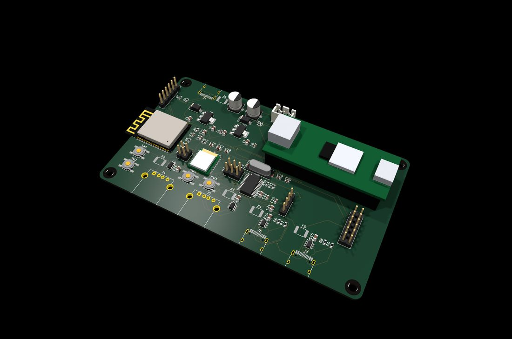
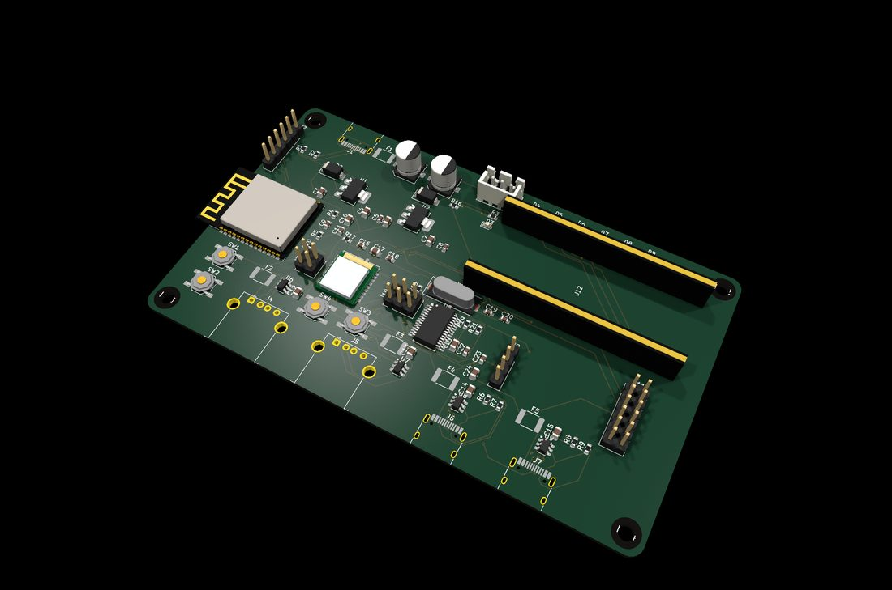
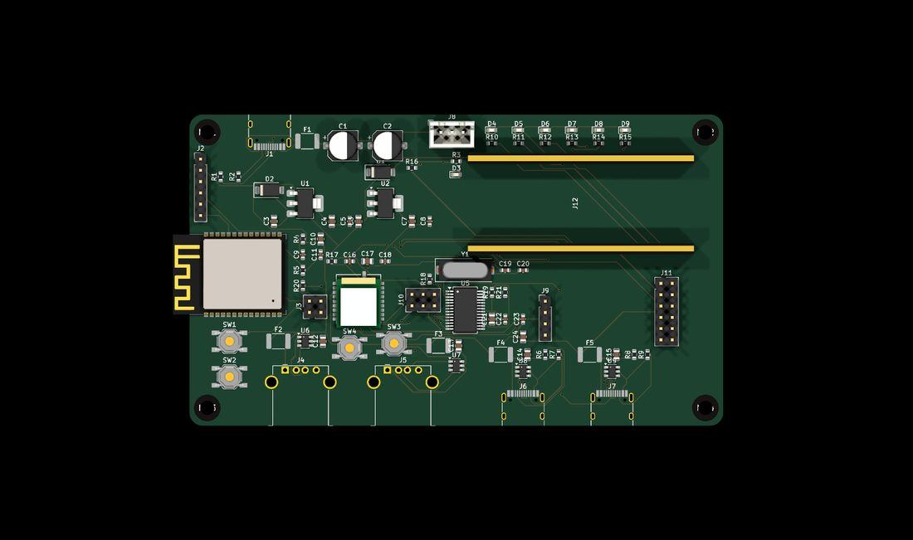
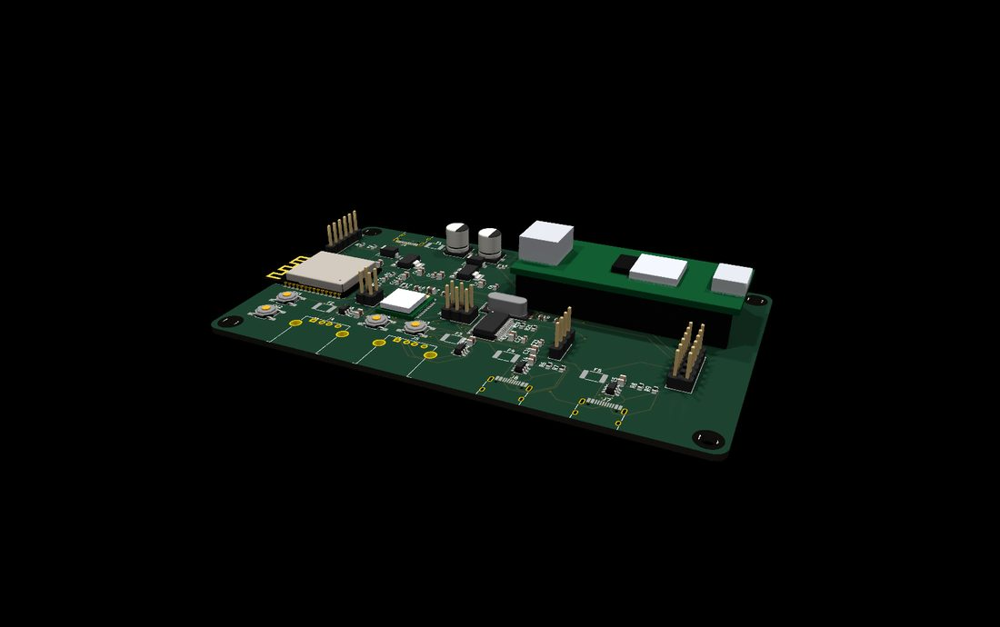
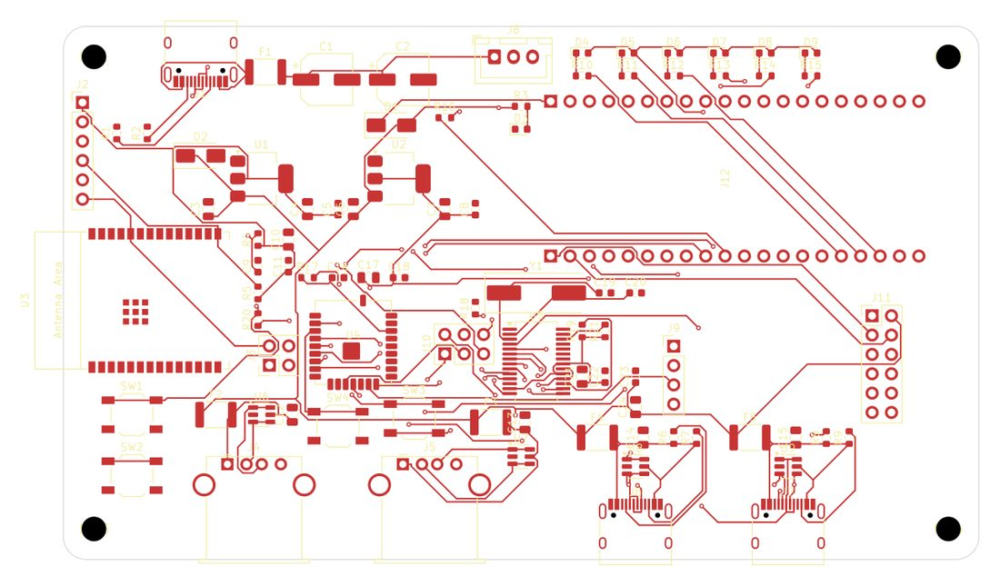

Placa portadora para el Tang Nano 20K: integra un módulo M0S (BL616), un hub USB de 4 puertos y un ESP32-C6 (WiFi) para que todo funcione por los conectores del Tang, sin cables externos. Carrier board for the Tang Nano 20K: it integrates an M0S (BL616) module, a 4-port USB hub and an ESP32-C6 (WiFi) so everything runs through the Tang's own headers — no external cables.

Desde ~febrero de 2024, Sipeed fabrica placas Tang Nano 20K (marcadas 3921 en la serigrafía) cuyo BL616 de a bordo lleva el eFuse de secure-boot en un estado que a menudo le impide ejecutar el firmware FPGA-Companion. El resultado: el teclado y el ratón USB dejan de funcionar (el HDMI y el menú sí van, porque eso lo hace la FPGA, no el BL616). La recomendación oficial para esas placas es usar un M0S Dock externo.
Since ~February 2024, Sipeed ships Tang Nano 20K boards (silk-marked 3921) whose on-board BL616 has its secure-boot eFuse in a state that often prevents it from running the FPGA-Companion firmware. The result: the USB keyboard and mouse stop working (HDMI and the menu still work, because that's the FPGA, not the BL616). The official workaround for those boards is to use an external M0S Dock.
Estas placas son pruebas de concepto que llevan ese arreglo a un PCB propio: integran un M0S (BL616) dedicado como companion USB, más el hub y el WiFi, de modo que no dependes del BL616 bloqueado del Tang y no necesitas dongles ni cables sueltos. These boards are proof-of-concept designs that bake that fix onto a dedicated PCB: they integrate a dedicated M0S (BL616) as the USB companion, plus the hub and WiFi, so you no longer depend on the Tang's locked BL616 and need no dongles or loose cables.
Companion USB con el firmware FPGA-Companion (build M0S_DOCK), por la ruta SPI externa m0s[]. Sin tocar el RTL del core.USB companion running FPGA-Companion (M0S_DOCK build) over the external m0s[] SPI path. No RTL changes.
Hub USB 2.0 aguas abajo del BL616: 2× USB-A + 2× USB-C, con polyfuse y ESD por puerto.USB 2.0 hub downstream of the BL616: 2× USB-A + 2× USB-C, each with a polyfuse and ESD.
Internet por el firmware UNAPI de ducasp. El C6 (no el WROOM clásico) porque el core fija la UART a 859372 bps.Internet via ducasp's UNAPI firmware. The C6 (not classic WROOM) because the core fixes the UART at 859372 bps.
Entrada única por USB-C: alimenta la placa y el Tang (por su pin de 5 V, con diodo anti-retorno).Single USB-C input: powers the board and the Tang (through its 5 V pin, with a reverse-blocking diode).

La misma placa vista de tres formas: en 3D desde arriba, el stack Tang+dock en ángulo, y el cobre superior tal cual en KiCad (el rutado real).The same board three ways: 3D from above, the Tang+dock stack at an angle, and the top copper straight out of KiCad (the actual routing).



En uso normal solo hay dos jumpers que colocar (J3 y J10); el resto son cabeceras que se usan una vez para programar.In normal use there are only two jumpers to set (J3 and J10); the rest are headers used once, for programming.
| Ref | NombreName | Qué es / para quéWhat it is / for |
|---|---|---|
| J1 | USB-C_POWER | Entrada de alimentación 5 V. También datos para flashear el BL616 (vía J10).5 V power input. Also the data path to flash the BL616 (via J10). |
| J2 | ESP_FLASH | Cabecera 1×6 para programar el ESP32-C6 con un adaptador USB-serie.1×6 header to program the ESP32-C6 with a USB-serial adapter. |
| J3 ⚙ | ESP_UART_LINK | Jumper 2×2: conecta o aísla la UART FPGA↔ESP.2×2 jumper: connect or isolate the FPGA↔ESP UART. |
| J4 / J5 | USB-A 1 / 2 | Dos puertos USB-A de salida (teclado, ratón, joypad, pendrive).Two USB-A output ports (keyboard, mouse, joypad, flash drive). |
| J6 / J7 | USB-C 1 / 2 | Dos puertos USB-C de salida (host, para periféricos con cable C).Two USB-C output ports (host, for C-cable peripherals). |
| J8 | WS2812_STRIP | JST 1×3 para una tira de LEDs WS2812 (de la caja).1×3 JST for a WS2812 LED strip (in the case). |
| J9 | BL616_FLASH | Cabecera 1×4: log serie y flasheo de emergencia del BL616.1×4 header: serial log and emergency flashing of the BL616. |
| J10 ⚙ | BL_USB_SEL | Jumper 2×3: enruta el USB del BL616 al hub (normal) o a J1 (flasheo).2×3 jumper: routes the BL616's USB to the hub (normal) or to J1 (flashing). |
| J11 | EXPANSION | 2×6 con pines libres del Tang + 5 V/3V3/GND, para ampliaciones (p. ej. MIDI).2×6 with the Tang's free pins + 5 V/3V3/GND, for add-ons (e.g. MIDI). |
| J12 | TangNano20K | Zócalo 2×20 donde se enchufa el Tang. Todo pasa por aquí.2×20 socket where the Tang plugs in. Everything goes through here. |
El enlace serie FPGA ↔ ESP32.The FPGA ↔ ESP32 serial link.
A dónde va el USB del BL616 (fila central = común).Where the BL616's USB goes (centre row = common).
J3 con sus 2 caps; J10 con los caps arriba (1-3 / 2-4). Tang en J12, alimentación por J1. Periféricos en J4–J7, WiFi por el ESP.J3 with its 2 caps; J10 with caps up (1-3 / 2-4). Tang in J12, power via J1. Peripherals in J4–J7, WiFi through the ESP.
Quita los caps de J3. Adaptador USB-UART en J2 (TX↔RX cruzados). Mantén SW2 BOOT y pulsa SW1 RST. Programa y vuelve a poner los caps.Remove J3's caps. USB-UART adapter on J2 (TX↔RX crossed). Hold SW2 BOOT and press SW1 RST. Program, then put the caps back.
Mueve los caps de J10 a 3-5 / 4-6. Cable USB-C de datos de J1 al PC. Mantén SW3 BL_BOOT y pulsa SW4 BL_RST. Carga fpga_companion_m0sdock.bin y devuelve los caps.Move J10's caps to 3-5 / 4-6. USB-C data cable from J1 to the PC. Hold SW3 BL_BOOT and press SW4 BL_RST. Load fpga_companion_m0sdock.bin, then restore the caps.